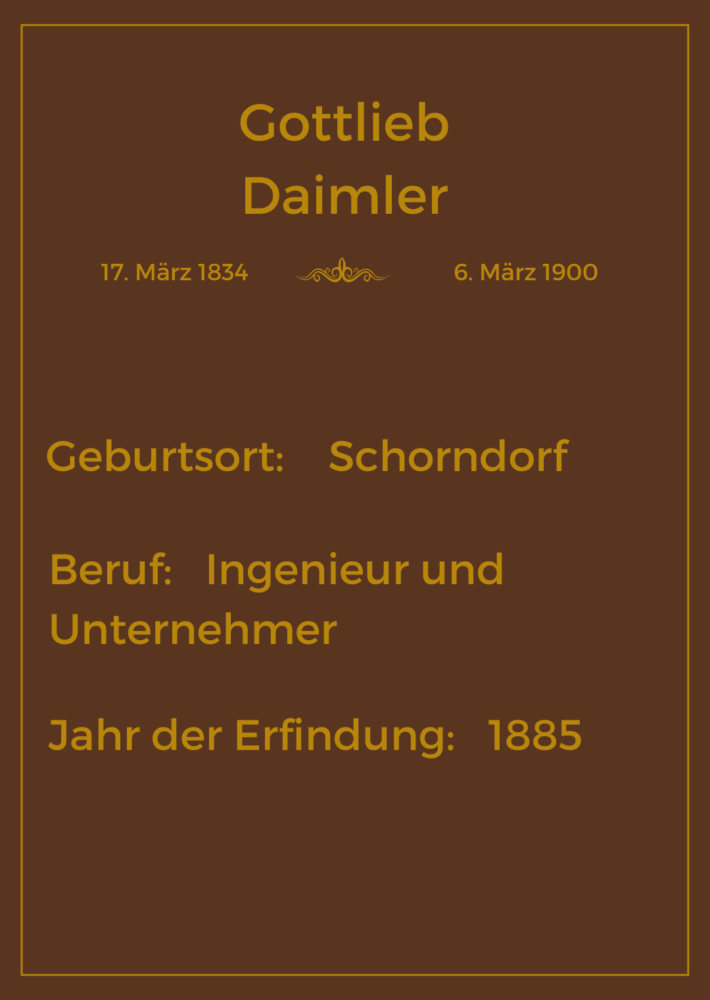

Straßenbahn
Vor dem Jahr 1881 gab es in Städten bereits ein Eisenbahnnetz für öffentliche Verkehrsmittel. Die ersten Straßenbahnen wurden von Pferden gezogen und waren eine alternative zu den Pferdekutschen. Sie hatten jedoch den Nachteil, dass sie langsam waren und von der Kraft und Gesundheit der Pferde abhängig waren. Zudem produzieren Pferde auch Kot, der weggemacht werden musste. Und auch Dampfstraßenbahnen, welche später hinzukamen hatten Nachteile. Sie waren laut, rauchten und verursachten schädliche Abgase.
Werner von Siemens, ein deutscher Erfinder und Unternehmer, hatte schon in den 1860er Jahren erste Versuche unternommen, elektrische Motoren für Straßenbahnen zu entwickeln. Doch es dauerte noch bis 1881, bis er die erste elektrische Straßenbahn erfolgreich umsetzte. Die erste elektrische Straßenbahn fuhr in Lichterfelde, einem Vorort von Berlin. Sie fuhr etwa 2,5 Kilometer und erreichte eine Geschwindigkeit von 15 Km/h. Damit war sie nicht nur leiser und umweltfreundlicher, sondern auch schneller und effizienter als Pferde- oder Dampfstraßenbahnen.
Die Einführung der elektrischen Straßenbahn hatte einen enormen Einfluss auf den öffentlichen Verkehr und die Stadtentwicklung. In kurzer Zeit wurden in vielen Städten elektrische Straßenbahnen eingeführt und ersetzten die alten Pferde- und Dampfstraßenbahnen. Die elektrische Straßenbahn war nicht nur schneller und effizienter, sondern auch zuverlässiger und komfortabler für die Fahrgäste. Dadurch wurden auch mehr Menschen dazu ermutigt, öffentliche Verkehrsmittel zu nutzen.
Auto
Die Erfindung des Automobils ist ein bedeutendes Ereignis in der Geschichte der Technik und Mobilität. Die Entstehung des Automobils war das Ergebnis einer langen und schrittweisen Entwicklung, die über mehrere Jahrzehnte hinweg stattfand und viele Erfinder und Ingenieure involvierte. Die frühe Geschichte des Automobils kann bis ins 18. Jahrhundert zurückverfolgt werden, als erste Entwicklungen im Bereich der Dampfmaschinen und Dampfkutschen stattfanden. Jedoch war die Idee eines Fahrzeugs mit einem Verbrennungsmotor, das ohne Pferdezug betrieben werden konnte, erst im 19. Jahrhundert ein Thema.
Im späten 18. Jahrhundert entwickelten mehrere Erfinder und Ingenieure Konzepte für das Automobil. Zu den wichtigsten Pionieren gehörten Gottlieb Daimler

und Karl Benz, die unabhängig voneinander arbeiteten und jeweils ihre eigenen Fortschritte bei der Entwicklung von Fahrzeugen mit Verbrennungsmotoren machten.
Im Jahr 1886 präsentierten sowohl Benz als auch Daimler ihre ersten motorisierten Fahrzeuge der Öffentlichkeit. Der von Benz entwickelte Benz Patent-Motorwagen war ein dreirädriges Fahrzeug, das von einem Benzinmotor angetrieben wurde und als das erste serienmäßig hergestellte Auto der Welt gilt. Daimlers "Reitwagen" hingegen war ein einspuriges Fahrzeug mit zwei Rädern, das als Vorläufer des modernen Motorrads gilt.
Die Erfindung des Automobils war ein Meilenstein in der Geschichte der Mobilität und Technik. Es ermöglichte den Menschen, sich schneller und effizienter fortzubewegen und hatte einen enormen Einfluss auf die Art und Weise, wie wir leben, arbeiten und reisen. Die Technologie des Verbrennungsmotors, die zur Entwicklung des Automobils führte, hat auch eine Vielzahl anderer Anwendungen in verschiedenen Bereichen der Industrie und Technik gefunden.
Motorrad
Die Entwicklung des Motorrads ging Hand in Hand mit der Entwicklung des Automobils. 1885 stellte Gottlieb Daimler den ersten benzinbetriebenen Motor vor, der später in Fahrzeugen verwendet werden sollte. Daimler und sein Partner Wilhelm Maybach experimentierten auch mit der Verwendung von Verbrennungsmotoren in Motorrädern.
Ein wichtiger Schritt bei der Entwicklung des modernen Motorrads war die Erfindung des Einzylinder-Motors im Jahr 1894 durch Hildebrand und Wolfmüller. Ihr Motorrad war das erste, das ausschließlich für den Einsatz mit einem Verbrennungsmotor konzipiert war. Es hatte auch eine Hinterradfederung, die für ein besseres Fahrgefühl sorgte.
Die Entwicklung des Motorrads wurde auch durch die Erfindung des Ottomotors vorangetrieben. Der Ottomotor, der in den 1880er Jahren von Nikolaus August Otto entwickelt wurde, war effizienter und leistungsstärker als frühere Verbrennungsmotoren. Dies ermöglichte es den Herstellern, leistungsstärkere Motorräder zu bauen.
Eine weitere wichtige Erfindung für das Motorrad war das Getriebe, das es dem Fahrer ermöglichte, die Geschwindigkeit zu variieren. 1901 stellte Triumph das erste Zweiganggetriebe vor und 1914 wurde das Dreiganggetriebe von Harley-Davidson eingeführt.
Während des 20. Jahrhunderts wurde die Technologie des Motorrads immer weiter verbessert und verfeinert. Elektrische Systeme, Scheibenbremsen, ABS und andere technologische Fortschritte haben das Motorrad sicherer und zuverlässiger gemacht.
Insgesamt ist die Entwicklung des Motorrads ein Ergebnis der Fortschritte in der Verbrennungsmotortechnologie und der Automobilentwicklung.